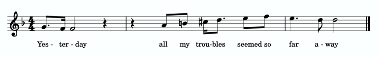
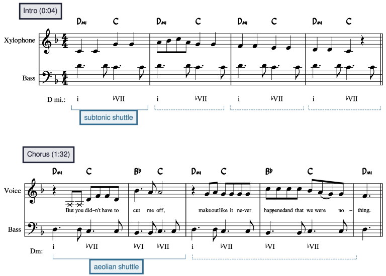
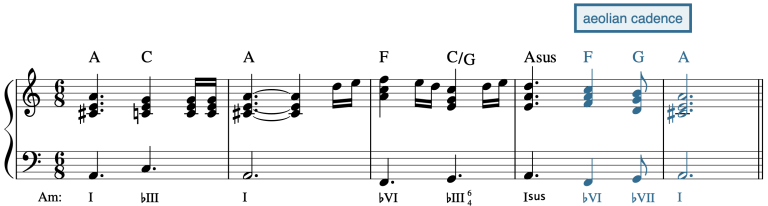
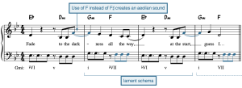

小调体系：自然、和声与旋律小调
摇滚、金属与抒情摇滚极多采用小调。彻底分清自然小调、和声小调与旋律小调各自改了哪两个音、为什么要改；理清关系小调与同主音小调的区别；认出小调歌曲里频频出现的“大 V”和声与安达卢西亚进行。
1. 全局地图
2. 逐个概念
① 自然小调与它的顺阶和弦
- 是什么
- 自然小调（也叫爱奥利亚 Aeolian）结构是
1 2 ♭3 4 5 ♭6 ♭7（全 半 全 全 半 全 全）。以 C 大调第 6 级 A 开始得到 A 自然小调（A B C D E F G）。 - 为什么需要
- 它的顺阶和弦恰好是关系大调成员的重排：i(Am) – ii°(B°) – ♭III(C) – iv(Dm) – v(Em) – ♭VI(F) – ♭VII(G)。
- 在指板上
- 注意它的第 5 级是小三和弦
v (Em)，因为自然小调第 7 级 G 离 A 差全音（不是半音导音），回主拉力很柔和。 - 听起来
- 常见误解
- “自然小调没有导音，所以回不了家。”爱奥利亚常用 <code>♭VI – ♭VII – i</code>（史诗摇滚终止）或直接走 v–i 来营造含蓄忧伤的回家感。
② 和声小调：为什么小调歌里总有大 V？
- 是什么
- 为了让小调也能拥有 V7→i 的强力正格解决，人们把自然小调第 7 级升高半音变成导音（G→G♯），得到和声小调（1 2 ♭3 4 5 ♭6 7）。这瞬间把第 5 级从 Em 变成了大三 E 或属七 E7（大 V）！
- 为什么需要
- 副作用是 ♭6（F）到 7（G♯）之间拉宽成了 3 个半音的增二度，听起来立刻带有弗拉门戈、中东或新古典金属（Yngwie Malmsteen）的浓烈异域味。
- 在指板上
- 弹《Sultans of Swing》的
Dm–C–B♭–A或《House of the Rising Sun》的Am–C–D–F–Am–C–E，对比把大 V 改回小 v 的力度落差。 - 听起来
- 常见误解
- “歌里出现大 E 和弦说明转去 A 大调了。”大错！Am 进行里出现 E 或 E7 是最标准的小调和声小调属和弦，并没有转调。
③ 旋律小调与三种小调的“混用真相”
- 是什么
- 古典作曲家嫌和声小调 ♭6→7 的增二度唱起来别扭，于是顺手把 ♭6 也升高半音成 ♮6（1 2 ♭3 4 5 6 7），上行丝滑解决，下行再还原回自然小调。现代爵士与 Fusion 则直接上下行都用这一套（称为爵士小调 Jazz Minor）。
- 为什么需要
- 记住：自然、和声、旋律不是三种互相隔绝的“调”，而是同一个小调在不同时刻的三种音色工具箱。
- 在指板上
- 比如《Stairway to Heaven》前奏：低音线走
A – G♯ – G – F♯ – F，几秒内同时串起了旋律小调、和声小调和自然小调的音色！ - 听起来
- 常见误解
- “一首歌要么是自然小调，要么是和声小调。”实际 90% 的小调歌曲都会同时使用自然小调和声（♭VI/♭VII）以及和声小调属和弦（V7）。
④ 关系大小调 vs 同主音大小调
- 是什么
- 关系大小调（Relative）：同一组音和调号、不同主音（如 C 大调与 A 小调、G 大调与 E 小调，大调主音往下小三度 = 小调主音）。
同主音大小调（Parallel）：同一个主音、不同调号（如 C 大调与 C 小调）。 - 为什么需要
- 关系调用来打通指型复用（背一套指型就能弹 C 大调和 A 小调）；同主音调则用来解释摇滚借用和弦和平行调式对比。
- 在指板上
- 在下方实验室切开 A 自然小调与 A 和声小调，把指板上红色的 7 级音位置盯死。
- 听起来
- 常见误解
- “A 小调的关系大调是 A 大调。”不对！A 大调是同主音大调；A 小调的关系大调是往上数小三度（3 半音）的 C 大调。
3. 交互指板与伴奏实验室
点下方预设快速切换把位与音阶/和弦；点任意一格都能发声，开启持续音即可直接对着指板练习即兴与听辨。
4. 上琴练习
- 5 弦根音三小调连弹（65 BPM）：在 A(5弦0品或6弦5品)依次弹自然、和声、旋律小调，嘴里唱出改变的 6、7 级。重点验证：按节拍稳定、说得出级数与音名。
- 大 V vs ♭VII 循环对比（75 BPM）：弹 Am–G–F–E 循环 16 小节，再换 Am–G–F–G，录音对比结尾张力差。重点验证：按节拍稳定、说得出级数与音名。
- S3 小调曲目和弦分析（手写分析表）：挑选《All Along the Watchtower》《House of the Rising Sun》《Sultans of Swing》标罗马数字，圈出大 V。重点验证：按节拍稳定、说得出级数与音名。
- 一图两家体验（开持续音）：在 C 大调把位上，先开 C 持续音弹 1 分钟，再换 A 持续音弹同样指板，体会家感的转移。重点验证：按节拍稳定、说得出级数与音名。
5. 分歧点对照
| 容易混淆的两面 | 核心区别 | 实战怎么选 |
|---|---|---|
| 小调里的小 v (Em) vs 大 V (E7) | 柔和怀旧 vs 戏剧性强烈回主 | 只要听到 Am 歌里突然冒出大 E 或 E7，立刻认出它是和声小调借来的属和弦 |
| 关系小调 vs 同主音小调 | 同调号 (C/Am) vs 同主音 (C/Cm) | 前者负责指型平移，后者负责色彩突变（如副歌从 Cm 突然转亮到 C 大调） |
6. 读原资料指南
- OMT: Minor Scales, Scale Degrees, and Key Signatures ↗ — 精读三种小调构造与小调调号关系 已嵌入下方全文
- OMT: Modal Schemas ↗ — 爱奥利亚与安达卢西亚终止的摇滚应用 已嵌入下方全文
- David Bennett Piano: Minor Key Tricks ↗ — 结合大量流行金曲听清小调变体
📖 本地精要（免跳转直接看：David Bennett Piano：流行与摇滚金曲背后的和声套路与调式基因）
- 【四大流行循环】I–V–vi–IV（开朗大气）、vi–IV–I–V（叙事伤感）、I–vi–IV–V（复古浪漫）、I–♭VII–IV–I（混合利底亚摇滚双变格）。
- 【调外催泪三剑客】III7（V/vi，如《Creep》《海阔天空》）、iv（平行小调小四级，走 6→♭6→5 半音下行）、♭VI–♭VII–I（马里奥终止 / 摇滚凯旋进行）。
小调音阶、音级与调号Minor Scales, Scale Degrees, and Key SignaturesOMT · 小调音阶、音级与调号
Minor Scales, Scale Degrees, and Key Signatures小调音阶、音级与调号
- A minor scale's third note is always a half step lower than the third note of the major scale with the same name.任意小调音阶的 3 级永远比同名大调的 3 级低一个半音（大三变成小三！）。
- There are three variations on the minor scale: natural minor, harmonic minor, and melodic minor.小调体系实际包含三种常用风味：自然小调、和声小调和旋律小调。
- Each minor scale is an ordered collection of half and whole steps, as follows:三者的全半音结构分别是：
- Natural minor: W‑H‑W‑W‑H‑W‑W (ascending)自然小调（上行）：W‑H‑W‑W‑H‑W‑W（1 2 ♭3 4 5 ♭6 ♭7）
- Harmonic minor: W‑H‑W‑W‑H‑3Hs‑H (ascending)和声小调（上行）：W‑H‑W‑W‑H‑3Hs‑H（在自然小调上把 ♭7 升高半音成 7，制造出 ♭6→7 跨三个半音的增二度）
- Melodic minor: W‑H‑W‑W‑W‑W‑H (ascending) and W‑W‑H‑W‑W‑H‑W (descending).旋律小调：上行 W‑H‑W‑W‑W‑W‑H（6、7 级双双升高成 1 2 ♭3 4 5 6 7），下行回归自然小调 W‑W‑H‑W‑W‑H‑W（流行与爵士上下行经常混用升高后的形式）。
- While there are three minor scales, minor keys and minor key signatures are always identified as simply "minor" ("A minor," "D minor," etc.) and are based on the natural minor scale.虽然音阶有三种变体，但在记调号和定调时一律统称为“某某小调”（如“A 小调”“D 小调”），调号永远直接依据自然小调来写。
- Scale degrees in minor are the same as those in major. There are a few new solfège syllables in minor including me, le, and te.小调的音级数字定位方式与大调相同，只是在唱名法上新增了降三音 me、降六音 le 与降七音 te。
- Each note of a minor scale is also named with scale-degree names. These are largely the same in minor as they are in major, except for the subtonic (te or 7̂).音级名称绝大部分沿用大调体系，唯独降七度全音下方 7 级特称“下主音/次主音（subtonic，即 te / 7̂）”。
- Major and minor keys share two different relationships. The parallel relationship is when a major and minor key share a tonic note, while the relative relationship is when a major and minor key share a key signature.大小调之间存在两大黄金关联：同主音关系（如 C 大调和 C 小调主音相同）与关系大小调关系（如 C 大调和 A 小调共用一套调号）。
- Each major key signature has a corresponding relative minor key signature whose tonic is three half steps below the relative major's tonic. The orders of sharps and flats in major and minor key signatures are the same.每个大调的调号都直接对应一个低三个半音（小三度）的关系小调，两者使用的升降号个数和顺序完全一致。
Open Music Theory · 小调音阶、音级与调号（Minor Scales, Scale Degrees, and Key Signatures）。原文作者：Chelsey Hamm and Bryn Hughes。Open Music Theory, Version 2，CC BY-SA 4.0。中文为本站翻译，以英文原文为准。
三种小调风味与实战区分The Minor ScaleOMT · 小调音阶、音级与调号
The Minor Scale三种小调风味与实战区分
A minor scale's third note is always a half step lower than the third note of the major scale with the same name (e.g., B major and B minor). There are three different types of minor scales: natural minor, harmonic minor, and melodic minor. These three types of minor scales should be thought of like flavors of ice cream; ice cream is still ice cream regardless of whether it is chocolate, vanilla, strawberry, etc. Likewise, a work is simply "minor" or "in minor;" musicians do not consider music to be "in" a specific type of minor scale (i.e., natural, harmonic, or melodic). In other words, while there are three minor scales, minor keys and minor key signatures are always identified as simply "minor" ("A minor," "D minor," etc.) and are based on the natural minor scale.所有小调音阶的三音都比同名大调低半音。它衍生出三种变体：自然小调、和声小调和旋律小调。你可以把这三种小调想象成同一种冰淇淋的三种配料口味——不会说“这首歌在和声小调里”，整首歌的调性和调号永远统一写为“A 小调”或“G 小调”（以自然小调作调号底版），然后在需要强劲和声解决或顺滑旋律线的时候自由混用另外两种口味的 6、7 级变化音！
The three different types of minor scales are useful categories primarily for instrumental performers. Learning to play the different types of minor scales on instruments allows performers to become familiar with the minor patterns most commonly used in Western classical music. Just like major scales, minor scales are named for their first note (including the accidental, if any), which is also their last note.对乐手来说，分练三种小调指型极其有价值——能让你随时顺畅应对流行、摇滚与爵士里突然窜出来的大 V 和弦与半音经过。
Like major scales, minor scales are very common in many different genres in music. One example of a minor scale (see Melodic Minor below) can be heard in the Beatles's “Yesterday” (1964). Example 1 shows an excerpt from the beginning of this song:披头士名曲《Yesterday》（1964）开篇主唱旋律一上来就走出一条清晰的小调上行线（例 1）：

You can listen to the music in Example 1 starting at 0:05 in Example 2. Listen for the ascending minor scale in the voice:在例 2 第 0:05 处可亲耳听出这条极具代表性的小调级进：
Example 2."Yesterday" by Paul McCartney and John Lennon; listen starting at 0:05.例 2. 试听《Yesterday》0:05 处旋律。
Minor is often (but not always!) used to depict negative emotions, such as sadness, in Western music. It is therefore appropriate that "Yesterday," which is about a breakup which has left the speaker devastated, is in a minor key.西方音乐常把小调和感伤、深沉甚至冷峻情绪连在一起（《Yesterday》正是一首痛惜失恋的名曲），但切记小调同样也能极其热情狂野。
Natural Minor自然小调（Natural Minor）
The natural minor form of the minor scale consists of an ordered collection of half and whole steps with the ascending succession W‑H‑W‑W‑H‑W‑W, as shown in Example 3. Each whole step is labeled with a square bracket and “W,” and each half step is labeled with an angled bracket and “H.” Listen carefully to Example 3 and notice that the half and whole step pattern of the natural minor form of the minor scale is the same ascending and descending.全半音结构为 W‑H‑W‑W‑H‑W‑W，上下行完全一致（例 3）。
Example 3. A G natural minor scale. (Sounding scale is F natural minor.)例 3. 一条 G 自然小调音阶图示（下方附对照音响）。
You can practice identifying whole and half steps in a natural minor scale in the following exercise:你可以用下面练习训练识别自然小调的半全音步：
You can practice identifying the names of natural minor scales in the following exercise:你可以用下面练习训练自然小调音名识别：
Harmonic Minor和声小调（Harmonic Minor）
The harmonic minor form of the minor scale consists of an ordered collection of half and whole steps in the ascending succession W‑H‑W‑W‑H‑3Hs‑H (“3Hs” = 3 half steps), as shown in Example 4. The curved bracket represents a distance of three half steps (or a whole step plus a half step). Listen carefully to Example 4 and notice that the half and whole step pattern of the harmonic minor form of the minor scale is the same ascending and descending.全半音结构为 W‑H‑W‑W‑H‑3Hs‑H（“3Hs”指 ♭6 与 7 之间跨出三个半音即增二度！例 4）。之所以这样发明，正是为了在小调里得到能像大调一样强烈解决回 i 级的大 V（以及 7 级半减/全减）属和弦。
Example 4. A G harmonic minor scale. (Sounding scale is F harmonic minor.)例 4. 一条 G 和声小调音阶图示（突出 ♭6 到 7 的三半音跨度）。
Melodic Minor旋律小调（Melodic Minor）
The melodic minor form of the minor scale consists of an ordered collection of half and whole steps in the ascending succession W‑H‑W‑W‑W‑W‑H and the descending succession W‑W‑H‑W‑W‑H‑W, as shown in Example 5. When you listen to Example 5, notice that the melodic minor form has different ascending and descending patterns: the ascending pattern is unique to the melodic minor form, while the descending pattern is the same as the natural minor form.上行为 W‑H‑W‑W‑W‑W‑H（为了抹平和声小调那道别扭的三半音增二度跨栏，顺手把 6 级也升起来），古典体系下行回归自然小调（例 5），而在吉他独奏与爵士里上行形式上下照样用（也称爵士小调 Jazz Minor）。
Example 5. A G melodic minor scale. (Sounding scale is F melodic minor.)例 5. 一条 G 旋律小调上下行对比示例。
Example 6 shows four versions of a C scale—major, natural minor, harmonic minor, and melodic minor—with the scale degrees indicated. Listen to this example carefully, noting the aural differences between the scales.例 6 用同主音 C 音做起点，直接把C 大调、C 自然小调、C 和声小调与C 旋律小调并排对比——仔细分辨每一条只在 3、6、7 三个位置微调后的色彩差！
Example 6. Major, natural minor, harmonic minor, and melodic minor scales, all starting on C.例 6. 同主音出发的四种音阶横向大对比。
Open Music Theory · 小调音阶、音级与调号（Minor Scales, Scale Degrees, and Key Signatures）。原文作者：Chelsey Hamm and Bryn Hughes。Open Music Theory, Version 2，CC BY-SA 4.0。中文为本站翻译，以英文原文为准。图片版权：Yesterday Beatles © Paul McCartney and John Lennon is licensed under a CC BY-SA (Attribution ShareAlike) license；Scale-degree Names Minor © Chelsey Hamm is licensed under a CC BY-SA (Attribution ShareAlike) license；Sharps and Flats in Different Clefs © Chelsey Hamm is licensed under a CC BY-SA (Attribution ShareAlike) license；Minor Circle of Fifths © Wiki Commons adapted by Bryn Hughes is licensed under a CC BY-SA (Attribution ShareAlike) license；Durch die bunten Rosenhecken © Louise Reichardt is licensed under a Public Domain license
拿到同一套调号，怎么分辨大调还是关系小调？Major or Minor?OMT · 小调音阶、音级与调号
Major or Minor?拿到同一套调号，怎么分辨大调还是关系小调？
When you are given a piece of music to play or sing, the notation will often include a key signature, which will help you to narrow down the key of the work to two options: a major key and its relative minor.[1] But how can you tell which one the work is in? One thing that can help is to listen to and look at context clues. One type of such clues are the first and last notes of the work—pieces often start and end on the tonic, so this can help you determine whether a work is major or minor.一份五线谱或吉他谱标出 4 个降号，它既可能是 A♭ 大调，也可能是它的关系小调 F 小调！[1] 怎么一眼辨真伪？靠听觉与两大线索：看全曲或乐段首尾落在哪个和弦/低音上（结尾通常回主音，且看有没有升导音构成的属和弦 V→i 推向那个目标！）。
Example 15 shows the first three measures of a song by Louise Reichardt (1779–1826) titled "Durch die bunten Rosenhecken" ("Through the colorful rose hedges"):例 15 节选了 Louise Reichardt 的歌曲前三个小节作示范：
This example shows a vocal line (the top staff) and a piano part (the grand staff underneath the vocal part). The key signature contains four flats, which means we can narrow down the key of this work to A♭ major or F minor. In Example 15, the first note that is circled in the highest part (the vocalist) is F, as is the first note that is circled in the lowest part (the lowest note played by the piano). Therefore, it is likely that the key of this work is F minor instead of A♭ major.调号含四个降号（锁定 A♭ 大调或 F 小调），但观察人声最高旋律起步与钢琴最低贝斯落脚全都在 F 上——因此基本定调为 F 小调！
[1] The vast majority of Western classical works from 1700–1900 are in either major or minor. But outside of this time period and cultural context, you should also consider if the piece may be in a diatonic mode. This would expand the number of possible tonics indicated by a key signature.放眼当代流行摇滚与世界音乐，除了大小调外，同一组调号还可能是七种自然调式里的任一种，所以永远要靠耳朵找谁才是真正的中心主音！
Open Music Theory · 小调音阶、音级与调号（Minor Scales, Scale Degrees, and Key Signatures）。原文作者：Chelsey Hamm and Bryn Hughes。Open Music Theory, Version 2，CC BY-SA 4.0。中文为本站翻译，以英文原文为准。图片版权：Yesterday Beatles © Paul McCartney and John Lennon is licensed under a CC BY-SA (Attribution ShareAlike) license；Scale-degree Names Minor © Chelsey Hamm is licensed under a CC BY-SA (Attribution ShareAlike) license；Sharps and Flats in Different Clefs © Chelsey Hamm is licensed under a CC BY-SA (Attribution ShareAlike) license；Minor Circle of Fifths © Wiki Commons adapted by Bryn Hughes is licensed under a CC BY-SA (Attribution ShareAlike) license；Durch die bunten Rosenhecken © Louise Reichardt is licensed under a Public Domain license
同主音关系 vs 关系大小调关系The Parallel and Relative RelationshipsOMT · 小调音阶、音级与调号
The Parallel and Relative Relationships同主音关系 vs 关系大小调关系
When comparing major and minor keys, there are two relationships that are important. The parallel relationship is when a major key shares a tonic (do, 1̂) with a minor key. For example, C major and C minor (or A♭ major and A♭ minor, or F♯ major and F♯ minor) are parallel keys. We use the terms "parallel minor" and "parallel major" to describe this relationship: C major is the parallel major of C minor, and C minor is the parallel minor of C major.研究大小调，必须分清截然不同的两种映射。同主音关系（Parallel relationship）指主音（do / 1̂）相同、音阶内音与调号不同的大小调（如 C 大调 vs C 小调、A 大调 vs A 小调——用来学同把位对比明暗色彩和借用和弦）。
The relative relationship is when a major key shares a key signature with a minor key. For example, C major does not have any sharps or flats in its key signature, and neither does A minor. We use the terms "relative minor" and "relative major" to describe this relationship: C major is the relative major of A minor, and A minor is the relative minor of C major. The tonic of a minor key is always three half steps below the tonic of its relative major: if you count three half steps below C, you will get A (C–B, B–B♭, B♭–A). Likewise, to find the relative major key of a given minor key, count three half steps up.关系大小调（Relative relationship）指共享完全相同的一组音与同一个调号、但主音相差小三度（3 个半音）的大小调（如无升降的 C 大调和 A 小调——关系小调主音在大调主音往下 3 个半音处，即吉他指板上往左退 3 品！）。
When counting half steps to determine the relative major or minor of a given key, keep in mind that relative keys have the same key signature. A sharp key cannot share a relative relationship with a flat key (and vice versa), which means you need to select the correct enharmonic key. For example, although the pitch three half steps down from D♭ could be written as either B♭ or A♯, only B♭ minor (five flats) is the relative minor of D♭ major (also five flats), because A♯ minor has a different key signature (seven sharps).找关系大小调时绝对不能用错了等音拼写：同调号的两调必须要么全用升号、要么全用降号！例如降 D 大调有 5 个降号，往下数三个半音对应的关系小调必须叫 5 降的 B♭ 小调，绝不能叫 7 升的 A♯ 小调。
Open Music Theory · 小调音阶、音级与调号（Minor Scales, Scale Degrees, and Key Signatures）。原文作者：Chelsey Hamm and Bryn Hughes。Open Music Theory, Version 2，CC BY-SA 4.0。中文为本站翻译，以英文原文为准。
爱奥利亚调式模板（Aeolian: ♭VII 与 ♭VI）Aeolian: ♭VII and ♭VIOMT · 调式和声模板
Aeolian: ♭VII and ♭VI爱奥利亚调式模板（Aeolian: ♭VII 与 ♭VI）
You may think of aeolian as equivalent to the natural minor scale. As a key or collection, though, aeolian and minor are different, because aeolian (as used in pop music) will prominently feature le and te (↓6̂, ↓7̂). These color note scale degrees give us the ♭VI and ♭VII chords, which are the signature chords of the aeolian mode. (Note the use of flat signs in label of ♭VI and ♭VII, even though they are diatonic in minor/aeolian—this is to prevent confusion with viio.) Aeolian schemas use one or both of these harmonies (Example 6). The ♭VI chord has subdominant function, and the ♭VII chord has dominant function.你通常把爱奥利亚（Aeolian）等同于自然小调。但在当代流行和声语境中，小调曲常借用升导音产生大 V 级，而纯正爱奥利亚摇滚的灵魂是大量强调自然小调特征音集的降六级 le（↓6̂）与降七级 te（↓7̂）——也就是大三和弦 ♭VI 与 ♭VII（即使在纯自然小调顺阶里，吉他手与流行教材也常标为 ♭VI 和 ♭VII，以彻底防止和升导音构成的 viio 混淆，见例 6）。其中 ♭VI 偏下属预属功能，♭VII 偏柔和属功能。
Example 6. The subtonic shuttle, aeolian shuttle, aeolian cadence, and lament schemas are four common aeolian chord progressions.例 6. 四大常见爱奥利亚进行：下主音往返、爱奥利亚往返、爱奥利亚终止与哀叹低音下行。

Subtonic shuttle下主音往返（Subtonic shuttle）
The subtonic shuttle was introduced as a mixolydian progression, but the same progression can be used in aeolian. The difference is only in the quality of the tonic chord. If it's major, then the subtonic shuttle implies mixolydian; if it's minor, then the subtonic shuttle implies aeolian. In other words, ♭VII–i, or B♭–Cmi in C minor, is the minor version of the subtonic shuttle. This subtonic shuttle is used in the intro and verses of "Somebody That I Used to Know" by Gotye (2011, Example 7).仅仅在 ♭VII–i（C 小调下为 B♭–Cmi）两个和弦之间反复拉锯的往返进行！注意和混合利底亚区分：如果落脚的是大三 I（♭VII–I）就是混合利底亚；落在小三 i（♭VII–i）就是爱奥利亚。这在 Gotye 名曲的前奏/主歌展现得淋漓尽致（例 7）。
Aeolian shuttle爱奥利亚往返（Aeolian shuttle）
Another common shuttle in aeolian is i–♭VII–♭VI–♭VII. This progression can be understood as a shuttle between i and ♭VI, with a passing ♭VII chord along the way. This progression is featured clearly in the chorus of "Somebody That I Used to Know" by Gotye (2011, Example 7).更丰富的常见循环 i–♭VII–♭VI–♭VII，本质是主 i 与 ♭VI 之间的三和弦穿梭（shuttle）并用 ♭VII 当平滑过桥（Gotye 同曲副歌即如此）。

Aeolian cadence爱奥利亚终止（Aeolian cadence: ♭VI–♭VII–i/I）
In the aeolian shuttle schema, the consistent shuttling back and forth between I and ♭VI makes it difficult for a true cadence to be implied—a cadence means that a goal has been reached, but a circular progression like the aeolian shuttle doesn't seem to have a goal. The aeolian cadence ♭VI–♭VII–i, or A♭–B♭–Cmi, is similar to the aeolian shuttle, but it's goal-oriented: it cadences on the tonic chord, and it does not tend to be used as a loop. The aeolian cadence very frequently uses a picardy third, which means all the chords are major: ♭VI–♭VII–I, or A♭–B♭–C.与反复绕圈无终点的穿梭不同，♭VI–♭VII–i（C 小调里为 A♭–B♭–Cmi）具有强烈终点抵达感！流行与配乐极常把最后的 i 用皮卡第大三和弦（Picardy third）替换成同主音大三 I（♭VI–♭VII–I，例如 A♭–B♭–C），连续三个大三和弦全音阶一步步豪迈踏上顶峰！
The aeolian cadence has a lot of cultural associations for many people and is typically associated with success and heroism. This cadence concludes the phrases of the Fellowship Theme from Lord of the Rings (Example 8, begins at 0:27). The aeolian cadence has also been called the Mario cadence, since the well-known fanfare at the end of each level of Super Mario Bros. uses this progression; the progression is often heard as a fanfare in other video games, such as Final Fantasy. In all of these examples, the cadence concludes with a picardy third.正因为那股势不可挡的雄浑感，这套进行成了《指环王》、史诗电影和经典电子游戏（如超级马里奥通关胜利号角“马里奥终止”、最终幻想等）里标志性的凯旋英雄终止！

Lament哀叹模板（Lament）
The lament schema has many variations, as discussed in the chapter addressing that schema. One particular flavor, i–♭VII–♭VI–v, strongly implies the aeolian mode due to the absence of a leading tone, which would imply a minor tonality, in favor of te (↓7̂), a color note of aeolian. This variation of the lament schema is heard in "I Don't Like You" by Eva Simons (2012, Example 9).哀叹下行模板把小调上半音阶低音 1̂–↓7̂–↓6̂–5̂ 配上和弦变成 i–♭VII–♭VI–v（或 V）。若末和弦保住含 ↓7̂ 特征音的小三 v（不升导音），就透出纯正冷艳的爱奥利亚古风。
Open Music Theory · 调式和声模板（Modal Schemas）。原文作者：Megan Lavengood。Open Music Theory, Version 2，CC BY-SA 4.0。中文为本站翻译，以英文原文为准。图片版权：modal_harmonic_function © Megan Lavengood is licensed under a CC BY-SA (Attribution ShareAlike) license；mixolydian © Megan Lavengood is licensed under a CC BY-SA (Attribution ShareAlike) license；tired_of_waiting；somebody_that_I_used_to_know 2 © Megan Lavengood is licensed under a CC BY-SA (Attribution ShareAlike) license；LOTR © Megan Lavengood is licensed under a CC BY-SA (Attribution ShareAlike) license；I don’t like you © Megan Lavengood is licensed under a CC BY-SA (Attribution ShareAlike) license；dorian；get_lucky © Megan Lavengood is licensed under a CC BY-SA (Attribution ShareAlike) license；lydian © Megan Lavengood is licensed under a CC BY-SA (Attribution ShareAlike) license；forget you © Megan Lavengood is licensed under a CC BY-SA (Attribution ShareAlike) license；mode_flow_chart-3 © Sarah Louden is licensed under a CC BY-SA (Attribution ShareAlike) license
⚡ 本模块其余配套课程与工具的本地精要 / 平替
- musictheory.net：The Minor Scales ↗
📖 本地精要（免跳转直接看：musictheory.net 互动图文短课核心提要）
- 该短课用极简五线谱动画演示基础乐理定义（音符时值、拍号、半音全音、大调/小调音阶、音程转位、三/七和弦及罗马数字）。
- 这些核心定义已 100% 转化为电吉他指板视角，嵌在本模块对应的「讲义」与每日「双语精读卡片」中，读完页内卡片即可完全掌握。
- musictheory.net：Composing with Minor Scales ↗
📖 本地精要（免跳转直接看：musictheory.net 互动图文短课核心提要）
- 该短课用极简五线谱动画演示基础乐理定义（音符时值、拍号、半音全音、大调/小调音阶、音程转位、三/七和弦及罗马数字）。
- 这些核心定义已 100% 转化为电吉他指板视角，嵌在本模块对应的「讲义」与每日「双语精读卡片」中，读完页内卡片即可完全掌握。
- musictheory.net 练习：Scale Ear Training（音阶听辨） ↗
📖 本地精要（免跳转直接看：musictheory.net 练耳练习（本站练耳室已内置同款训练））
- 直接在本站「练耳与节奏」使用吉他音色进行音程、和弦性质、功能级数与和弦进行听辨。
7. 自测 5 题
答案
没有违背。它来自 A 和声小调的第 5 级（把 G 升高成导音 G♯，使 Em 变成大三/属七 E7）。
答案
乐句重心与休止落在 A、C、E（尤其强化 ♭3 音 C），伴奏确立 Am 为中心或在句尾用 E7→Am。
答案
小调中经典的下行四和弦：i – ♭VII – ♭VI – V（如 Dm–C–B♭–A 或 Am–G–F–E）。
答案
它就是大调音阶只把第 3 级降半音（1 2 ♭3 4 5 6 7）！
答案
弹出 C♯（例如 3 弦 6 品或 2 弦 2 品），制造回归 D 的半音推力。
8. 在歌里听一听
- All Along the Watchtower（Jimi Hendrix）：C♯m–B–A（i–♭VII–♭VI 经典自然小调摇滚往返）
- House of the Rising Sun（The Animals）：Am–C–D–F–Am–C–E（6/8 拍，既有和声小调大 V 又有 D 多利亚色彩）
- Sultans of Swing（Dire Straits）：Dm–C–B♭–A 典型小调进行与结尾干净分解琶音
9. 带去原资料的 3 个问题
- 和声小调第 3 级上叠出的三和弦（如 A 和声小调的 C–E–G♯）是什么极少见的性质？在电影配乐里常怎么用？
- 为什么很多金属吉他手直接在 Am 进行里从头到尾弹“弗里几亚属音阶（A 和声小调第 5 级 E 开头）”？
- 完成阶段三（G7–G9）后，自检“10 分钟内分析一首流行/摇滚歌并移两首调”的里程碑 ③ 是否已扎实？